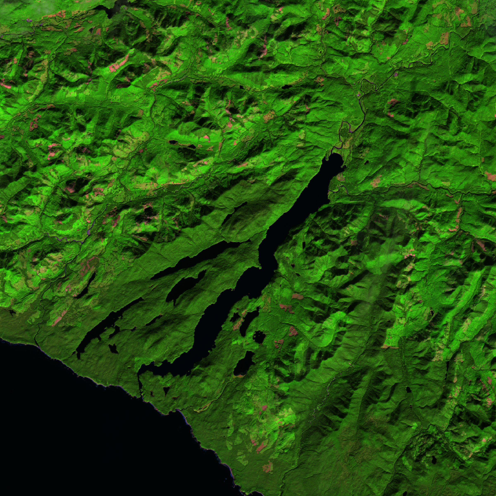

Remote Sensing Image Enhancements for Identifying Old Growth Forests
NSCC Centre of Geographic Sciences, Fundamentals of Remote Sensing
November 2023

(Click to enlarge)
Project Description:
The poster describes the process of using image enhancements in PCI Catalyst to allow the viewer to distinguish between old growth and new growth forests in Landsat-8 imagery of southwestern Vancouver Island. Here is an additional summary of the process:

This is the standard RGB composite image of the study area. In this image, the new-growth and old-growth forested areas are harder to tell apart.
Old-growth forested areas appear slightly darker, but the shadows from the mountainous terrain make the distinction difficult. The goal of
the image enhancement would be to make the old-growth and new-growth forests easier to visually discern, and to
reduce the effect of the shadows from the mountains.

{kind=link}
First, a 654 band composite was applied to the image. (Note: this project used Landsat-8 data, so this would be a 543 composite
if using Landsat-7 or earlier) The band composite was chosen because spectral analysis revealed that old-growth
and new-growth forested areas had a different spectral response in bands 5 and 6 (NIR and SWIR1) which could help
the viewer distinguish between the two land cover types.

Next, a standard square root enhancement was applied to the image. This image enhancement stretches values in the lower end
of the range, making them brighter overall as well as more distinguishable from each other. This helps distinguish shadowed
areas from water, as well as making the different types of forest cover easier to distinguish. However, this enhancement could
still benefit from more contrast between the different forested areas.

Finally, a custom image enhancement was applied to the image. This custom enhancement differs from the square root enhancement
in that an adaptive enhancement is applied to the NIR band, which is mapped to green. This enhancement was chosen for this channel
because the old-growth and new-growth forested areas display the most difference in this band. The resulting image displays old-growth
forest as a dark purplish green, and new-growth forested areas as a lighter green.
Software Used:
- PCI Catalyst Focus
- Esri ArcGIS Pro
- Microsoft PowerPoint
Data Sources:
- USGS: Landsat-8 imagery
- Province of British Columbia: Old growth forestry layer
- Esri: Basemap